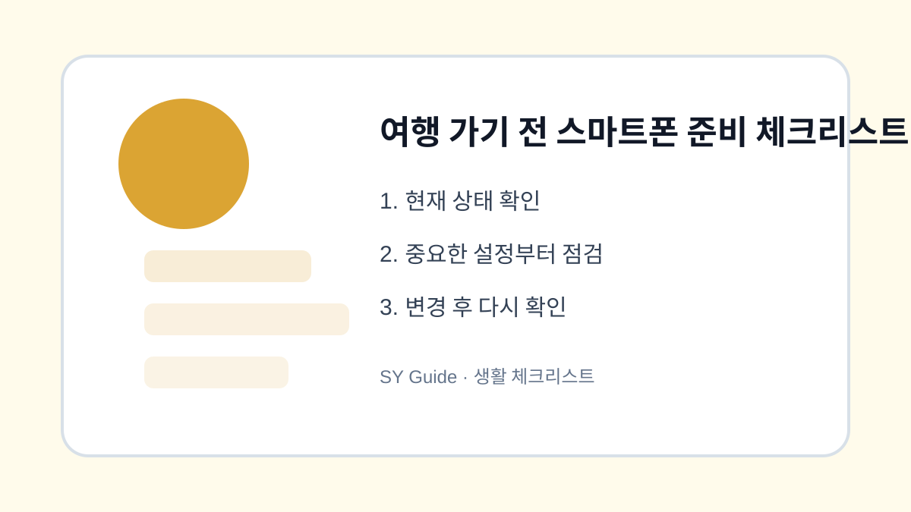

여행 가기 전 스마트폰 준비 체크리스트
여행 전 지도, 배터리, 데이터, 결제 앱, 사진 백업, 분실 대비 설정을 미리 확인합니다.

여행 중 스마트폰은 지도, 결제, 예약, 사진, 연락을 모두 맡습니다. 그래서 출발 후 문제가 생기면 불편이 큽니다. 여행 전날 10분만 투자해 기본 설정을 확인하면 배터리 부족, 데이터 초과, 사진 손실, 분실 상황을 줄일 수 있습니다.
지도와 데이터 준비
낯선 지역에서는 지도 앱이 가장 중요합니다. 숙소와 주요 장소를 저장하고, 해외여행이라면 로밍이나 eSIM 설정을 미리 확인합니다. 데이터가 약한 지역을 대비해 예약 확인서와 주소는 캡처해두면 좋습니다.
배터리와 사진 백업
보조배터리와 충전 케이블을 준비하고, 사진 백업이 켜져 있는지 확인합니다. 여행 중 사진이 많아지므로 저장공간도 미리 비워둡니다. 자동 백업이 모바일 데이터로 진행되지 않도록 설정하면 데이터 사용량을 줄일 수 있습니다.
| 항목 | 준비 내용 | 시점 |
|---|---|---|
| 지도 | 장소 저장 | 전날 |
| 데이터 | 로밍/eSIM 확인 | 전날 |
| 배터리 | 보조배터리 | 당일 |
| 사진 | 백업과 여유 공간 | 전날 |
상황별로 놓치기 쉬운 마지막 점검
- 숙소와 주요 장소를 지도에 저장하기
- 예약 확인서를 오프라인으로 보관하기
- 로밍이나 eSIM 작동 여부 확인하기
- 사진 백업과 저장공간 여유 확보하기
- 분실 대비 잠금과 위치 찾기 기능 켜기
여행 준비는 짐만 챙기는 일이 아닙니다. 스마트폰 설정을 미리 정리해두면 현장에서 훨씬 여유 있게 움직일 수 있습니다.
여행 전 스마트폰 준비 실제 상황 예시
여행 중에는 평소보다 스마트폰 의존도가 훨씬 높아집니다. 지도, 결제, 항공권, 숙소 연락, 사진 촬영이 모두 한 기기에 몰리기 때문에 배터리나 데이터 문제가 생기면 일정 전체가 흔들릴 수 있습니다. 출발 전 확인은 시간을 아끼기 위한 준비가 아니라 여행 중 선택지를 남겨두는 일입니다.
여행 전 스마트폰 준비에서 피해야 할 실수
해외에서는 본인 인증 문자를 받지 못해 앱 로그인이 막히는 경우가 있습니다. 자주 쓰는 금융 앱, 항공 앱, 숙소 예약 앱은 출발 전에 한 번씩 열어 로그인 상태를 확인하세요. 예약 확인서와 숙소 주소는 캡처해 두면 데이터가 불안정한 곳에서도 바로 확인할 수 있습니다.
여행 전 스마트폰 준비 관련 설정을 먼저 확인해야 하는 이유
여행 전 스마트폰 준비는 지도와 배터리만 챙기는 일이 아닙니다. 숙소 주소, 항공권, 예약 확인서, 결제 수단, 로밍이나 eSIM, 사진 백업까지 한 번에 연결됩니다. 현지에서 데이터가 느리거나 로그인이 막히면 작은 설정 하나가 큰 불편으로 이어질 수 있습니다.
여행 전 스마트폰 준비에서 자주 생기는 실수
출발 전날에는 지도 앱에서 숙소와 주요 장소를 저장하고, 예약 확인서는 캡처나 PDF로 보관하는 것이 좋습니다. 해외여행이라면 인증 문자가 국내 번호로만 오는 서비스가 있는지 확인해야 합니다. 금융 앱이나 항공 앱은 출국 전 로그인 상태를 한 번 열어 보는 편이 안전합니다.
여행 전 스마트폰 준비 점검 후 다시 볼 부분
사진 백업도 중요합니다. 여행 중에는 사진과 동영상이 빠르게 늘어나 저장공간이 부족해질 수 있습니다. 자동 백업을 켜되 모바일 데이터 사용 여부를 확인하고, 중요한 사진은 숙소 와이파이에서 백업이 끝났는지 확인한 뒤 정리하세요.